Macros
Macro’s let us do meta-programming in Rust.
Metaprogramming allows us to treat our code as data; manipulate it, expand it, and generate new code.
Macro’s let us do a lot of things, but I’ve broken this video into three parts
-
We’ll go over the basics of how you can use
macro_rules!to make your own macros -
I’ll show a somewhat real life use case I’ve been working with lately
-
And we’ll implement another programming language within Rust to demonstrate how you can create domain-specific languages (DSLs)
This series is accompanied by a free book, check the description for a link straight to this chapter.
My name is Daniel, welcome to IRISS.
There are two types of macro in Rust, macro_rules!, also known as declarative macros, or macros by example… and proc macros.
We won’t be dealing with proc macros in this series, but they allow you to create custom Derive macros and custom attributes.
They also let you make the same function style macros we’ll be making with macro_rules! but can unlock even more power!
If you’d like me to do a video on this after the IRISS series, let me know in the comments.
Today though, we’re just covering macro_rules!
Anatomy of macro_rules!
macro_rules! is, itself, a macro, providing its own domain specific language that allows you to create more macros.
This gets very powerful and, honestly, very weird.
Let’s take it slow.
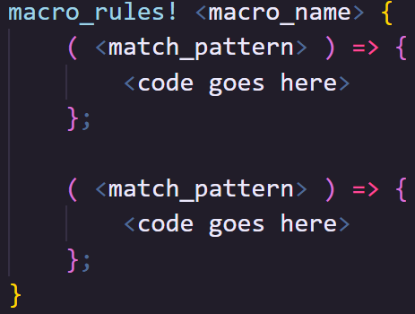
🦀👨🏻 The general layout of macro_rules! looks like this:
🦀👨🏻 We write macro_rules!, with an exclamation mark, followed by the name the macro we’re creating.
🦀👨🏻 We then have a block containing a list of rules.
🦀👨🏻 The rule contains a pattern to match on, which itself potentially contains metavariables which we’ll discuss later.
🦀👨🏻 Each rule also has a block that describes how code will be generated when the macro is invoked with a matching pattern.
Rather than it generating code with a simple copy/paste, macros work on the Abstract Syntax Tree or AST.
This is an intermediate step of the compilation process where your code has already been turned into datastructures that represents what your program does.
This makes it much safer and more fully featured that copy-paste style macros you might have worked with in the past.
Hello, macro!
We’ll start by making a hello world macro that produces a String.
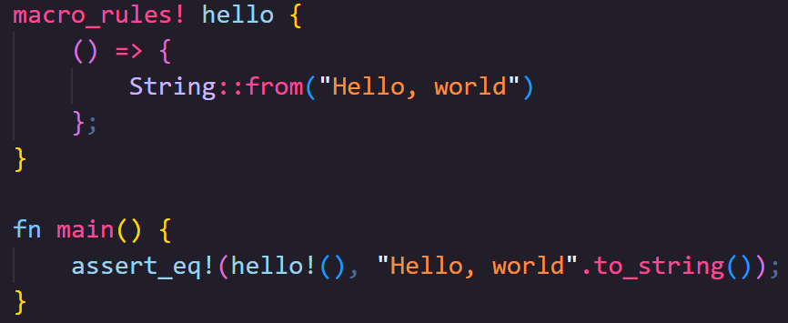
🦀👨🏻 As we said a moment ago, immediately after macro_rules! we provide the name of the macro we’re creating, in this case hello.
🦀👨🏻 Our first draft won’t match anything between the brackets, so we leave those empty.
🦀👨🏻 We then have an arrow, followed by some curly brackets surrounding what our macro will generate.
🦀👨🏻 Here’s a little test for it to show how it might be used.
🦀👨🏻 Our hello macro simply creates a string containing "Hello, world" at the site where the macro is called (in this case inside an assert_eq! macro).
🦀👨🏻 This type of macro could be useful if you have a block of code you need to repeat but don’t want to put in a function.
🦀👨🏻 But let’s be honest, that’s not going to come up very often.
🦀👨🏻 Let’s upgrade our macro to match a pattern.
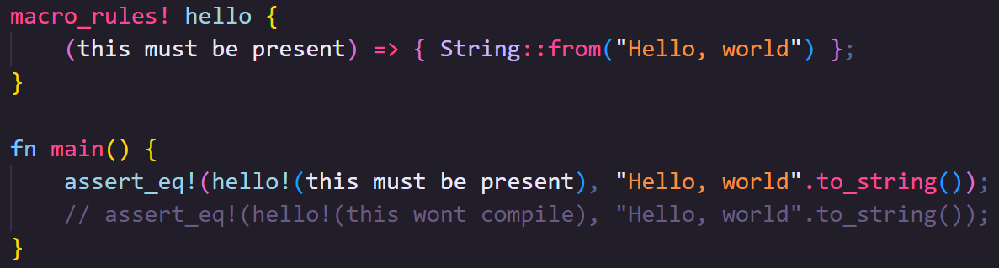
🦀👨🏻 What madness is this?!
🦀👨🏻 What kind of parameters are we passing to this macro?
🦀👨🏻 The key to understanding the power of macros is that they don’t take parameters.
🦀👨🏻 The thing in the brackets at the start of each rule is a pattern, and that pattern can be almost anything.
🦀👨🏻 The content of the macro’s invocation is broken up into something called a token tree, which we’ll talk about in the next section.
🦀👨🏻 Here, this must be present is parsed as four token trees: this, must, be and present.
🦀👨🏻 Different tokens won’t match our pattern, so this won’t compile.
🦀👨🏻 We can invoke different rules based on the matched pattern.
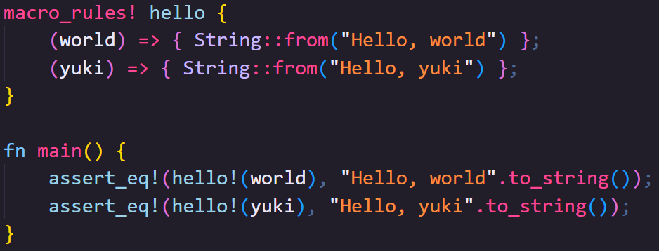
🦀👨🏻 So we could match several people by making a rule for each of them.
🦀👨🏻 We obviously can’t write out every possible thing that we might want match on though.
🦀👨🏻 What if we want to be able to say “hello” to lots of different people?
🦀👨🏻 Instead, we can capture tokens into metavariables.
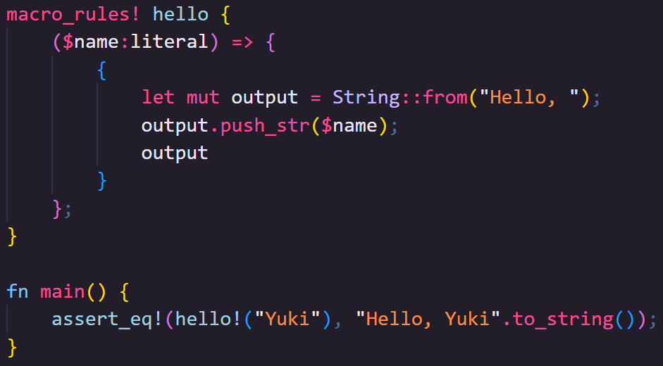
🦀👨🏻 Things got a little bit weird here, right?
🦀👨🏻 Let’s step through our changes.
🦀👨🏻 First, we added a metavariable, and you’ll immediately notice this looks nothing like a normal function parameter in Rust.
🦀👨🏻 In macro_rules!, we can parameterise tokens into “metavariables” which are preceded by a dollar symbol, followed by a colon, and what’s called a fragment-specifier.
🦀👨🏻 Fragment-specifiers are a bit like types but are specific to how Rust classifies tokens trees.
🦀👨🏻 We can’t specify str here, but we can specify that we expect a literal, which is any raw value, such as a string slice, a number, a boolean, etc.
🦀👨🏻 You might still wonder what happens if our macro gets a literal that’s not a str and the answer is it won’t compile.
🦀👨🏻 The person who passed in the non-str will get an error relating to the .push_str method on String though admittedly errors on macros like this can be a little harder to work with.
🦀👨🏻 That said, over the 10 years since Rust came out, contributors to the language have done a lot of work to clarify errors across the board.
🦀👨🏻 Anyway, there are a number of different fragment-specifiers, some of which overlap with each other, we’ll go over more of them in the next section.
🦀👨🏻 The second change we’ve made here is that inside of the code block… we’ve added another block.
🦀👨🏻 The reason for this is that when we invoke the macro, Rust generates code at the point that you place the macro.
🦀👨🏻 If we didn’t have the extra brackets, when we use the macro in our assert_eq!, our code would look to Rust as if it were this:
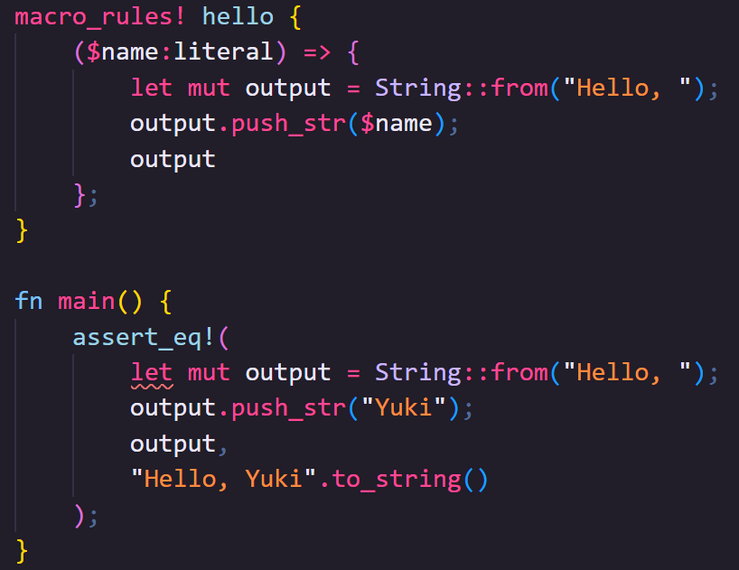
🦀👨🏻 This doesn’t work because assert_eq!, which is also a macro, expects to match expressions, represented by the fragment-specifier :expr.
🦀👨🏻 Oh… I’m going to have to work out how to vocalise a few unique things this episode, wish me luck!
In Rust, an expression is a segment of code that produces a value.
So String::from("Hello, ") is an expression, but let mut output = String::from("Hello, "); is not, that’s a :stmt, a statement.
Blocks of code, even multiple statements, surrounded by curly brackets are expressions though, they have a value, even if the value is the unit type.
When we wrap our macro in curly brackets then, and have some value as the final line, our code block becomes a single expression the value and type of which matches that final value.
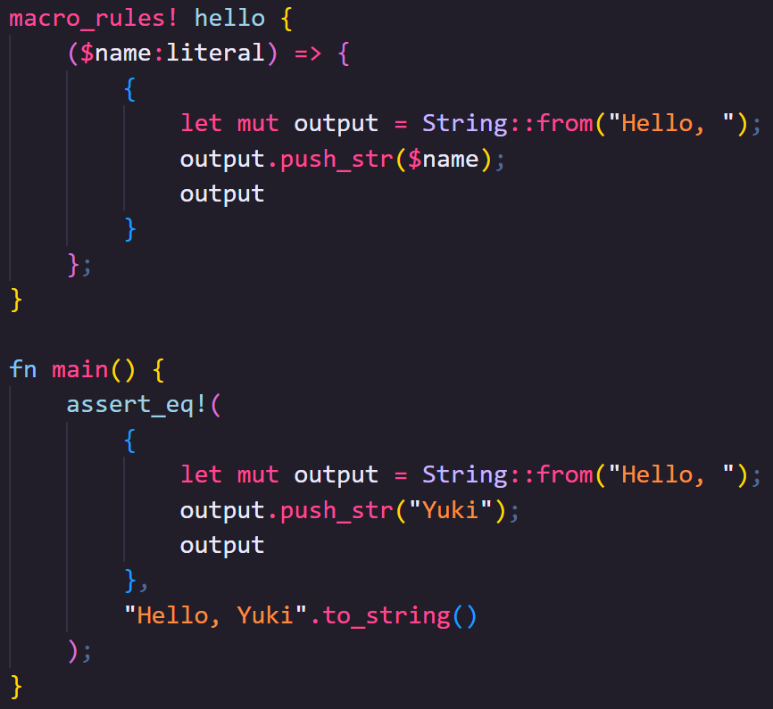
🦀👨🏻 This means that when we add those extra curly brackets to our macro, the generated code now looks like this, which is valid!
🦀👨🏻 Expressions in Rust are particularly useful as they have a type and a value, just like variables, allowing you to use them inside other expressions.
🦀👨🏻 Let’s go deeper and add another rule.
🦀👨🏻 Let’s bring back our original behaviour for an empty hello! macro:
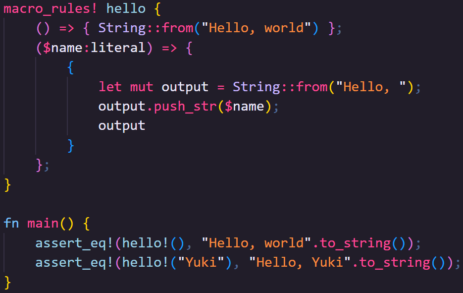
🦀👨🏻 This is fine, but we’re repeating ourselves a little bit.
🦀👨🏻 We should avoid having two copies of the "Hello, " string slice.
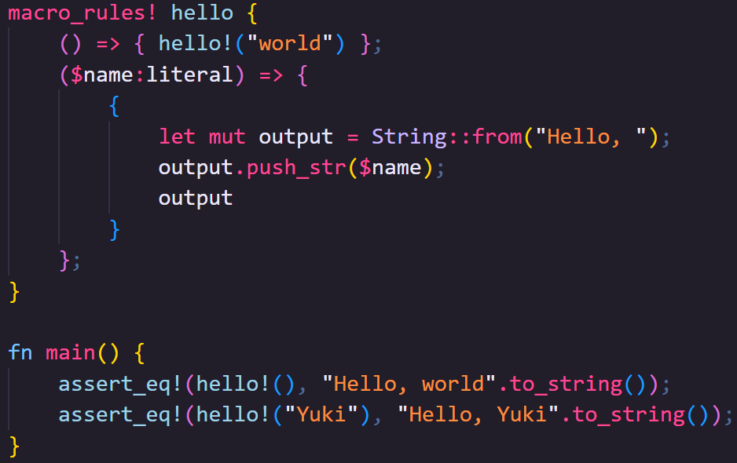
🦀👨🏻 To maintain consistency, we can call our macro recursively!
We’re nearly there now, but I think our hello macro is missing one critical feature; what if we want to greet lots of people at the same time?
We can “repeat” patterns inside macros by surrounding them with parenthesis preceded by a dollar and followed by either a ?, a +, or a *.
Similar to regex rules:
?means the content is repeated zero or one times+means one or more times- and
*means zero or more times
You can add a separator to the repeat pattern by placing it before the repeat character.
This token can be almost anything except the repeat tokens or delimiter tokens.
The most common separators you’re likely to use are commas or semicolons, but you could use something like tilde’s… ya know… if you’re twisted.
Repeats are used in rule matchers to match patterns, including metavariables, multiple times
They’re also used in code generation to repeat code for each repeated metavariable.
We already have zero and one metavariable dealt with, so we want a rule in our macro that takes two or more inputs
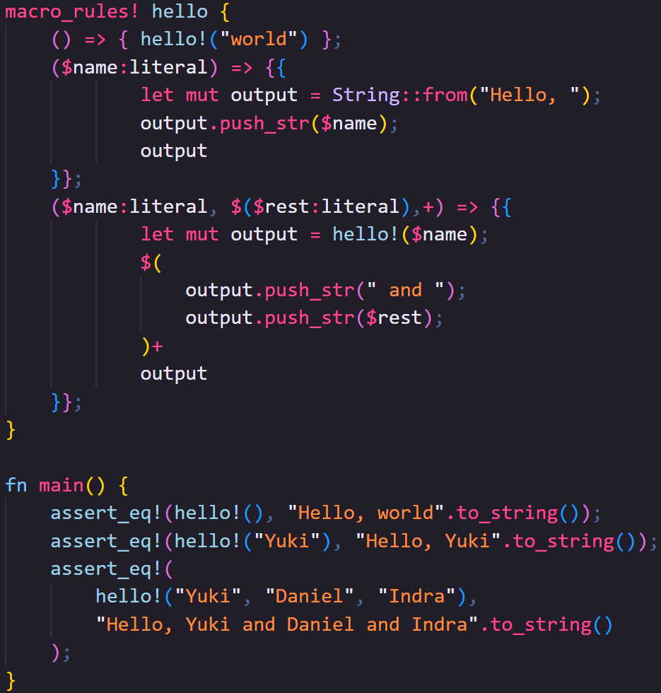
🦀👨🏻 For want of space, I’m going to condense the formatting from now on, so keep an eye out for those double curly brackets
🦀👨🏻 Our new rule looks a bit like the previous one, but now there’s a comma after $name:literal and then a repeat pattern.
🦀👨🏻 The repeat pattern contains a metavariable, $rest:literal, which will be used to store all metavariables passed to the macro after the first.
🦀👨🏻 It uses a + to show that there must be at least one additional metavariable, but there may be many.
🦀👨🏻 In the body of the macro, we initialise our output in much the same way as we do in the version with no inputs, by calling the hello macro with the first metavariable.
🦀👨🏻 We then have another repeat pattern that contains code with the $rest metavariable.
🦀👨🏻 Because we have a repeated metavariable inside a repeated block, this block will be repeated for every literal that $rest matched to.
🦀👨🏻 If we were to unwrap the code generated for the final test, it would look something like this:
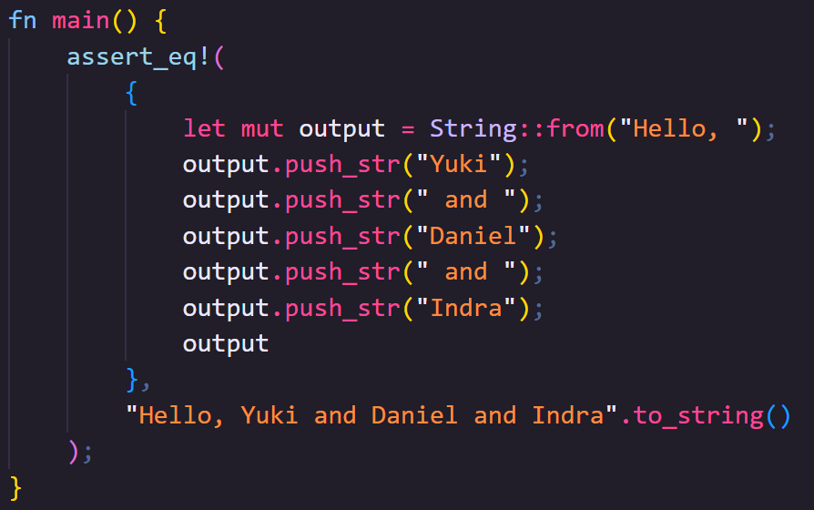
Hopefully, you’re starting to see why writing a quick macro can really cut down on repeated boilerplate code, and we’re really only making a quick toy macro to demonstrate the power they provide!
You might be wondering if we can use repeats to reduce the number of match arms we have.
We unfortunately can’t do things like treat the first or last element of a repeat differently using macro repeats undecided look,
but we can merge the second and third arms using a *.
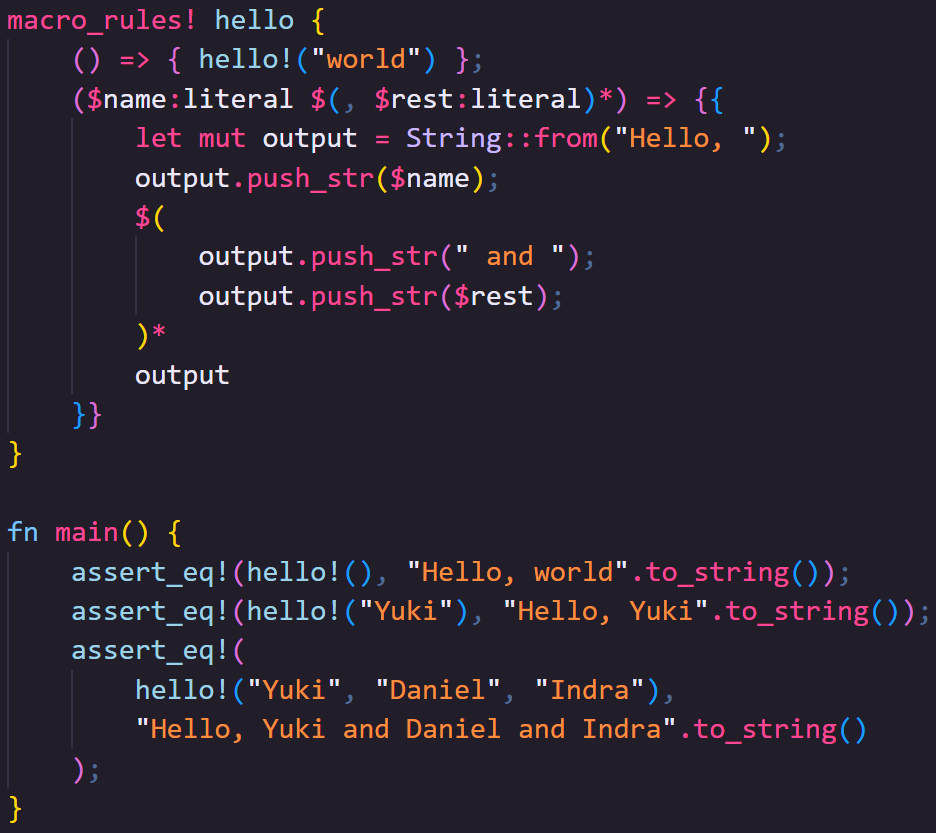
🦀👨🏻 You’ll notice that the , after $name:literal has moved inside the repeat pattern, and the , being used as a separator for the repeat has been dropped.
🦀👨🏻 This is because if we were to try to match ($name:literal, $($rest:literal),*) then we’d have to use the comma after the first literal so hello!("Yuki") would have to be hello!("Yuki", ) to work.
🦀👨🏻 Instead, we’ve moved the comma token to the beginning of the repeat pattern which can contain things that aren’t metavariables too.
Ok, so I wasn’t exactly lying about not being able to treat the first and last elements differently with macro repeats… we can’t do it with just macro repeats
BUT, we can work around that with very low-cost language features like slices.
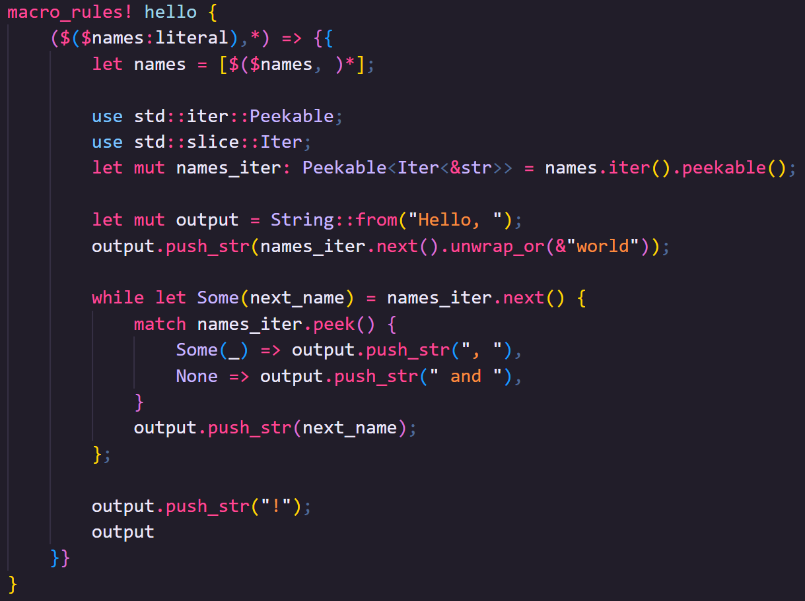
🦀👨🏻 We can split the names out directly into an array.
🦀👨🏻 This will be part of the binary, created at compile time, so doesn’t require any heap allocations
🦀👨🏻 Next let’s get an iterator over the array.
🦀👨🏻 By precisely specifying the type of the iterator here we can avoid Rust not knowing what type to infer if the iterator is empty.
🦀👨🏻 We’ll initialise our string as before.
🦀👨🏻 If no metavariables were passed, then the array will be empty, so we’ll use our default value, otherwise we take the first item
🦀👨🏻 Then we’ll loop until no more items are in the iterator
🦀👨🏻 By looking ahead to see if there are more items, we can now use grammatically correct separators between names
🦀👨🏻 And we’ll add an exclamation mark for funsies!
🦀👨🏻 Finally, we do need to update our tests for the improved grammar
— Missing Image —
Being able to quickly compose macros like this can save us a lot of time when repeating the same code over and over.
Tokens, Metavariables, and Fragment-Specifiers
Rust (like most languages) turns your human written code into tokens that it can process.
Groups of tokens can form a token tree.
If tokens are protons and neutrons, then token trees are atoms, and are the smallest thing that we can process in macro_rules!.
An important differentiation with Token Trees to a simple list of tokens are that delimiters (that’s parentheses, square brackets and curly brackets) are matched up for us.
For example, if we break the statement let hello = String::from("Hello"); into tokens, its looks like this.

But if we break it into token trees, then the parenthesis is a single token tree containing the token tree “Hello”.

In the previous hello! example, we captured tokens that were literals into metavariables with fragment-specifiers, but we can categorise tokens and token trees as more than just literals in macro_rules!.
Here’s a quick rundown of some of the most common fragment-specifiers:
tt matches a token tree, which is any single token (other than delimiters) or valid collection of delimited tokens.
Remember when we wrote this must be present in our silly example, each word is a token tree.
Token trees can be delimited by parentheses, square brackets or curly brackets so while this must be present is four token trees, we can make it a single token tree containing four token trees by surrounding it in brackets.
literal is the specifier we already used to match against a literal value.
This matches integers, floats, booleans, characters and a whole set of string types including; string literals, raw string literals, byte string literals, C string literals, and so on.
expr it short for “expression”.
An expression is any token tree that has a value.
For example, String::from("Hello") is an expression, but let hello = String::from("Hello"); is not.
block is specifically a block expression.
Like the code we were generating in our hello! example, blocks can have multiple statements surrounded with curly brackets {...} to make it a block expression.
Of course, all block expressions are also expressions so you may not end up using this fragment specifier too often
stmt is short for “statement”.
This is a line of code or an item.
For example let hello = String::from("Hello"); is a statement but so are items like modules, structs and functions.
ident is short for “identifier”.
These are things like variable names, type names, or any word that’s not specifically a keyword.
That said, you can make a raw identifier using r#, so while true is not an identifier because it’s a keyword, r#true is an identifier.
You’re most likely to see raw identifiers in macros, particularly ones that are for domain specific languages.
For example, DSLs that are used to create HTML might want to let you use the “type” keyword, as it’s an HTML attribute, so you might see r#type to make it a raw identifier.
In our earlier this must be present example, each of those tokens is also an identifier, identifiers don’t need to exist in code.
path is a type path.
This could be an identifier on its own, or a sequence of identifiers seperated by double colon tokens.
Like with identifiers, they don’t need to exist within the code, they just need to fit the pattern.
ty is short for “type”.
This could be a type or a type description.
For example (dyn Clone + Send) is what’s called a parenthesised type, though traits like Clone and Send are also types on their own, as are structs like String.
item is anything that could belong to a crate, such as functions, modules, static items, use statements, etc.
vis short for “visibility” describes the visibility of something else for example pub, pub(crate), or pub(super).
lifetime matches lifetimes such as 'a or 'static
meta, this is a weird one, it matches attributes.
It could be useful if you want to construct a type and pass in attributes to apply to it.
There’s a lot here, and I’ve ignored the backwards compatible fragment specifiers (some specifiers have changed behaviour over the years).
If you want to see the full list of fragment-specifiers, or more complete descriptions of each of them, check out the official documentation, link in the description
Usefully DRY
The example we ran through earlier to build up our understanding of how macro’s work was very abstract and not very useful, so I wanted to go over how I’ve started using Macro’s.
I’m going to show you how I’m using macros in my own code, but for the purposes of IRISS I’ve modified the examples to avoid using crates.
Crates are how we share reusable Rust code between each other but, if you haven’t noticed, I’ve avoided using any in this series to focus purely on the core language.
If you’re comfortable with crates and async Rust already, and you’re curious what the differences are in my real code, there’s a link to the app I’ve been building on stream in the description of this video.
In the Job Tracker app I’ve been building with the help of folks on my streams, I’ve leaned heavily into composing my types using Traits to form common behaviour.
For example, at time of writing, I allow the user to create things like Flags, Roles and Values that belong to Companys, so those types implement the trait HasCompany.
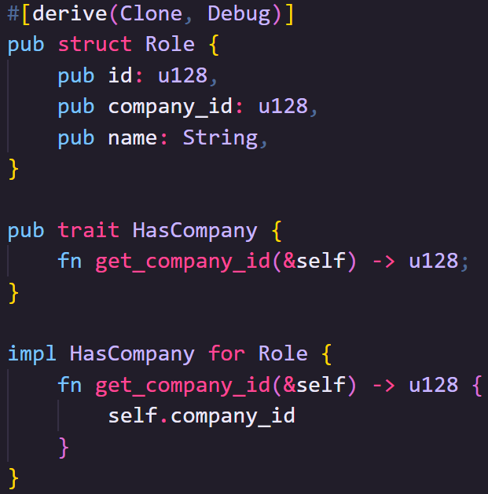
🦀👨🏻 Here’s an example of how that might look for Role.
🦀👨🏻 Role is pretty simple, it has an id of its own, an id that links it to a company, and a name.
🦀👨🏻The HasCompany trait has a single method, get_company_id.
🦀👨🏻 When we implement it for role, it just returns that company_id which is Copy so the code is nice and simple.
🦀👨🏻 I’m also a huge advocate for unit testing and even for code like this we ought to provide a simple test.
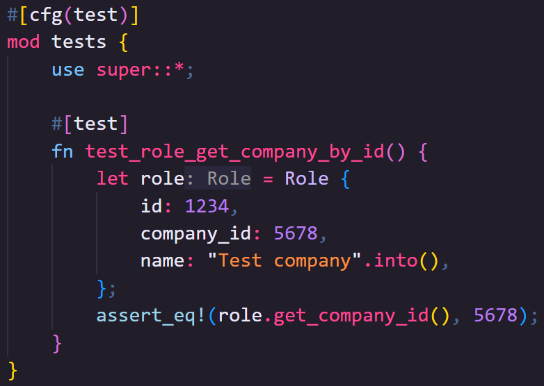
🦀👨🏻 This is pretty nice code, even if I do say so myself.
🦀👨🏻 It’s clean, easy to understand, easy to use.
🦀👨🏻 But, is it DRY?
DRY in this context, stands for “Don’t Repeat Yourself”
Every time we add a new storable item we’ll have to implement the trait and write tests for its implementation.
This isn’t the only Trait that is applied to “storable” types, and we have multiple “storage” types that also have lots of shared traits that all need implementing and testing.
🦀👨🏻 Let’s look at how macros can help us generate boilerplate code.
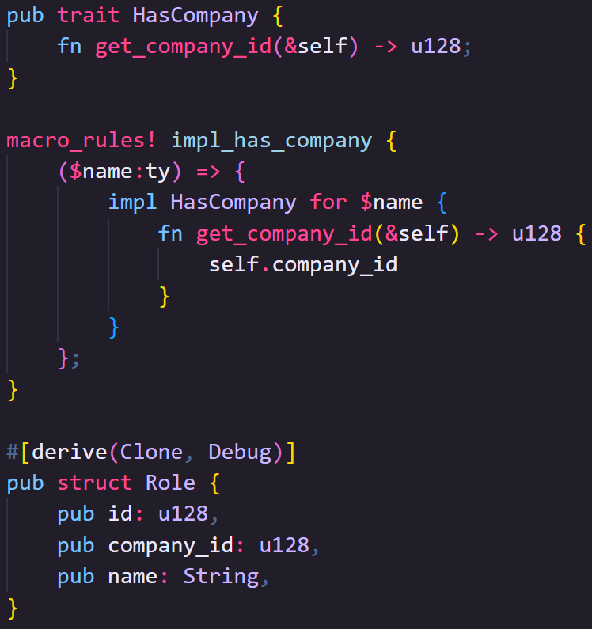
🦀👨🏻 First, we’ll create a macro that will implement HasCompany for any type that has a company_id field.
🦀👨🏻 Obviously if you try to implement this trait on something without this field, the macro will generate code that won’t compile, but if you need to do that, you can still write your own implementation.
🦀👨🏻 Role does have this field though so we can now implement the trait with one short line
Replacing the test is a little harder though.
We can’t easily write a generic test that will work for Role and Flag and Values as these types are instantiated in different ways.
What we need to do is have a consistent way to create test instances of the thing being tested.
🦀👨🏻 To do this, I created a TestHelper that can be applied to almost any type, its only job is to return an instantiated value of that type.
🦀👨🏻 This trait exists in a central location
🦀👨🏻 Each test macro sits alongside the trait it creates tests for
🦀👨🏻 We can make this test by taking two metavariables separated by a comma token.
🦀👨🏻 Test name is an ident which we’ll use to name the test function
🦀👨🏻 Storable is what I call any object in this project that can be stored, and in this case is the test subject.
🦀👨🏻 The test here is super rudimentary, we’re just going to make sure that when we request the id, we get something back.
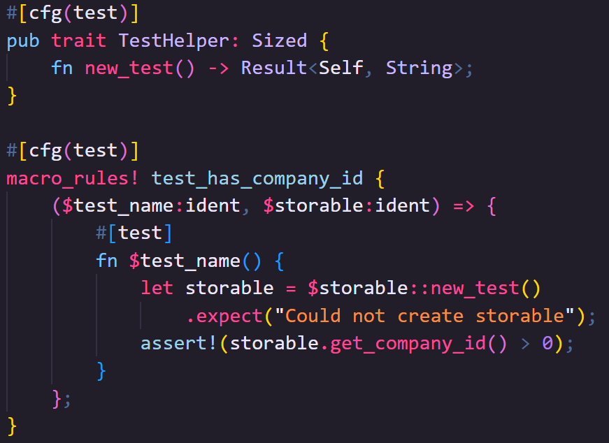
🦀👨🏻 By implementing the trait for each type that I want to test, I can add tests trivially like this:
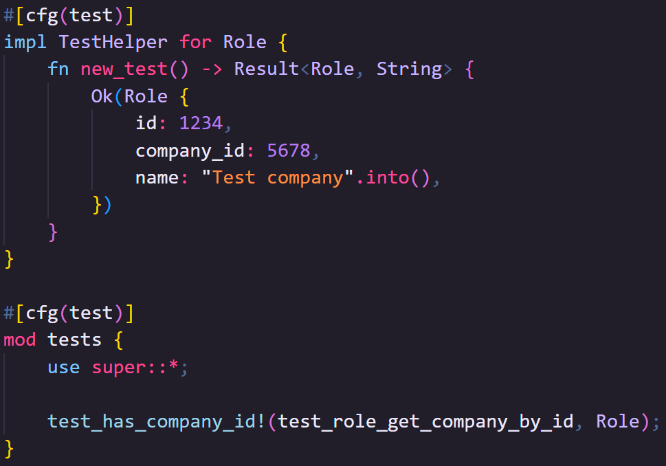
🦀👨🏻 This might initially seem like just as much work as before, as we add more traits and more types that implement those traits, the amount of extra work drops dramatically.
🦀👨🏻 Furthermore, there are more complex examples in Fio’s Job Tracker like the ones that manage the storing and recalling of these storable objects.
Domain Specific Languages
Ever wanted to write your own language?
We’re going to get a little bit silly shortly…
But Domain Specific Languages (DSLs) can be incredibly useful for conceptualising code in ways meaningful to your domain.
For example, JSX is a DSL for writing React in Javascript.
If you’re a web developer, ultimately creating HTML, which of these is more readable:
🦀👨🏻 This, which is valid Javascript
const heading = React.createElement(
'h1',
{className: 'example'},
'Hello, world!'
);
🦀👨🏻 Or this, which is not valid JavaScript
const heading = (
<h1 className="example">
Hello, world!
</h1>
);
🦀👨🏻 I think it’s undeniably easier to understand the one that looks like HTML.
🦀👨🏻 The React DSL will be converted back to JavaScript to be run in a JavaScript runtime.
So, I promised silly, lets write our own DSL… a Brain Fudge transpiler.
— pause —
A transpiler takes one language and turns it into another, like how Reacts DSL is transpiled into JavaScript
The programming language Brain Fudge was created by Urban Müller in 1993.
The language is what’s known as an “esoteric” language which is, loosely speaking, a fully functional language that you would never actually want to use.
Often they’re considered jokes, and Brain Fudge certainly is that, but it actually lets us write real programs with just eight instructions.
This makes it ideal for demonstrating how to make a full language inside Rust.
Brain Fudge operates on a theoretically infinite sequence of memory initialised to 0.
You start with a pointer, pointing to the first cell in memory and then process instructions that allow you to:
- move the pointer
- modify the data at that point in memory
- perform loops
- and either output or input data at the current pointer location.
We do all this with the following eight instructions:
greater than, increments the pointer position, moving it to the next position in memory
less than, decrements the pointer position, moving it to the previous position in memory
add, increments the value at the current position in memory
minus, decrements the value at the current position in memory
period, outputs the value at the current position in memory
comma, takes one word of input and stores it in memory (we won’t use this in this section though)
square brackets loop the contained code
Each time the loop begins the value at the current position is checked, if the value is 0, it skips the loop.
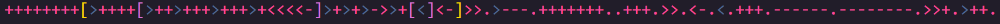
🦀👨🏻 That sounds easy enough, right…
🦀👨🏻 well, here’s Hello World in Brain Fudge.
🦀👨🏻 Don’t panic! We’re not here to learn Brain Fudge ourselves.
🦀👨🏻 We’ll just trust that this is the Hello World program, we’ll implement the instructions and see what happens when we run it.
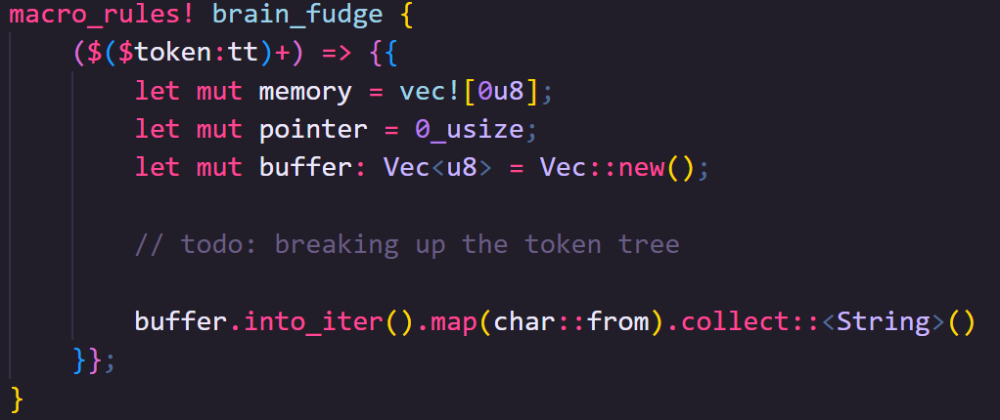 🦀👨🏻 We’re going to use two macros.
🦀👨🏻 First let’s create a macro that initialises the program.
🦀👨🏻 The input to our transpiler is a repeat pattern of token tree, which we’ll store in the metavariable token.
🦀👨🏻 As it happens the individual characters that make up Brain Fudge are all tokens in Rust so this should work well… (foreshadowing).
🦀👨🏻 memory is going to be our programs’ memory.
🦀👨🏻 We’re using a Vec with a single initialised value of 0 under the assumption that even the smallest program requires one word of memory.
🦀👨🏻 Brain Fudge doesn’t specify a word size, so we’re going to use 8bits, and we’ll expand the Vec as necessary.
🦀👨🏻 You can use larger words if you like but different programs might function differently depending on what word size is used and how overflows are handled (more on that later).
🦀👨🏻 This is not the most efficient way to do this (we’ll be doing a lot of heap reallocations) but are we taking this seriously?
🦀👨🏻 No, not at all.
🦀👨🏻 pointer points to the current position in memory, or, as we’ll be using it, its the index into our vector
🦀👨🏻 output is where we’ll store output data from the program.
🦀👨🏻 At the end of the macro we take the output Vec of u8s we’ve stored in output and collect it into a string by naively considering each byte to be an ascii character.
🦀👨🏻 Again, depending on how you want to work with your programs, you may want to process the output data differently but this is fine for us.
🦀👨🏻 So now we need to handle the token stream, but before we do that, lets write some tests.
🦀👨🏻 We’ll keep it simple for now, while this is the official Hello World
🦀👨🏻 and… actually that’s kinda hard to read, lets add some white space
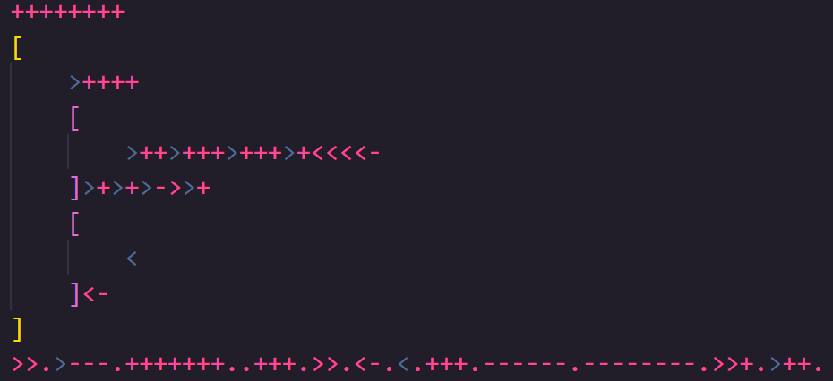
🦀👨🏻 yeah… no that didn’t help
🦀👨🏻 Anyway, while this is hello world, so is this
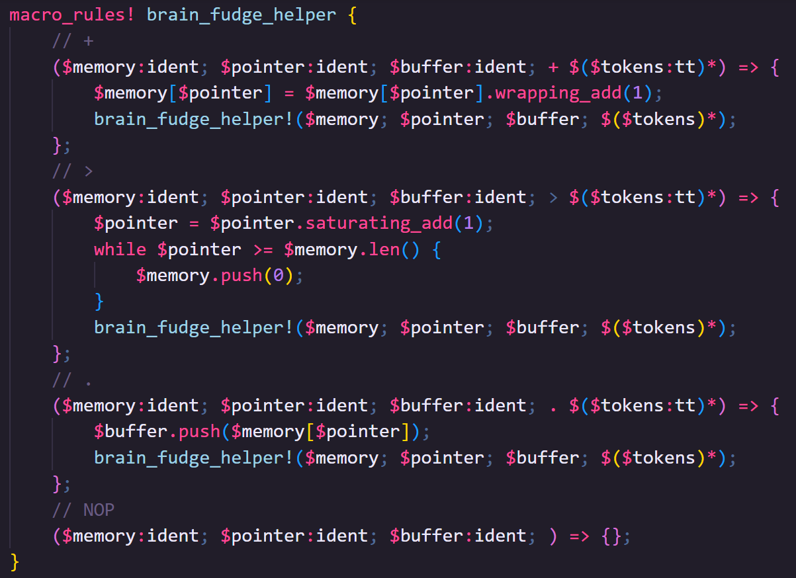
🦀👨🏻 In the official hello world, loops are used to increment values, but in this version, we’re just adding to the current memory location
🦀👨🏻 exporting it
🦀👨🏻 and moving to the next memory location.
🦀👨🏻 Let’s turn this into a test
🦀👨🏻 I made this version of Hello World because it only uses three characters out of the eight used in brain fudge, so to make this test pass, we only need to implement three operations
🦀👨🏻 So now we have a test, lets work out how to handle greater than, add, and period.
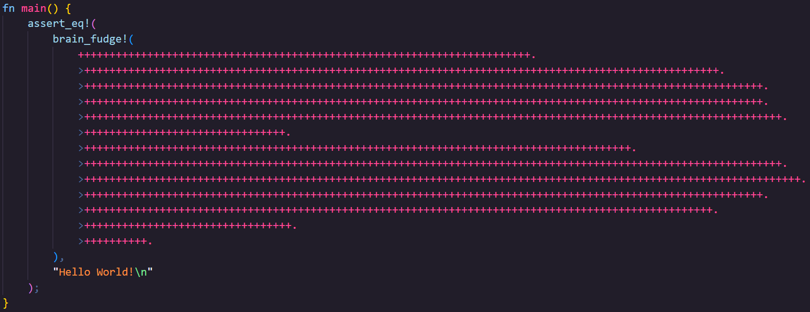
🦀👨🏻 We’ll create a new helper macro that can handle each of these tokens, by having a rule that matches each specific token.
🦀👨🏻 These rules will be called recursively so we will also need a special rule to handle when there are no tokens left so we have an endpoint to the recursion.
🦀👨🏻 To make it work, each rule will need to access the memory, the pointer, and the output buffer, so we’ll add an expectation of those to the match pattern.
🦀👨🏻 Additionally, because each rule only handles one instruction, we need to pass the rest of the instructions to the macro again recursively.
🦀👨🏻 Unlike our earlier examples, we’re going to use a semicolon as a separator in our pattern matching.
🦀👨🏻 The reason for this is that Brain Fudge uses commas as part of its syntax.
🦀👨🏻 We would still be able to correctly parse Brain Fudge code as, even were the first token in a program a comma, it still comes after the last comma we match against, but it will help with readability for anyone using the macro.
🦀👨🏻 So here we go.
🦀👨🏻 First lets handle plus token.
🦀👨🏻 All we need to do is add one to the value in memory at the pointer.
🦀👨🏻 Brain Fudge is non-specific about what to do in the event of an overflows, so I’m going to choose to allow it to wrap around
🦀👨🏻 Next lets implement the rule for the greater than token
🦀👨🏻 In this case we’re increment the value of the pointer but this time I don’t want to wrap.
🦀👨🏻 We’re using saturating_add for the specific reason we want to be consistent and I don’t want to wrap a usize on subtract, you’ll see why later!
🦀👨🏻 We also need to make sure that any time we go out of bounds of the memory Vec, that we resize the Vec appropriately and zero memory
🦀👨🏻 We can do this with a quick loop, pushing 0’s onto the end
🦀👨🏻 Next we want to match the dot operator.
🦀👨🏻 It takes the value at the current pointer and writes it to our output buffer
🦀👨🏻 Finally, we have a match arm for when there are no more tokens left that doesn’t do anything.
🦀👨🏻 Now we can update our brain_fudge! macro to call the helper, passing in the program state.
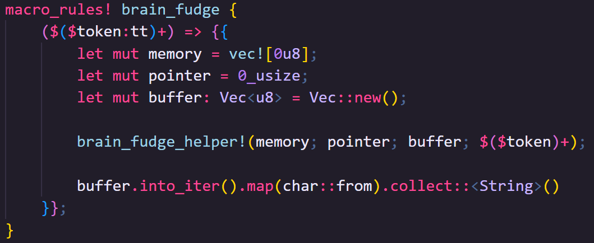
🦀👨🏻 So we now have a program that has our brain fudge macro, a brain fudge helper macro that passes 3 of the 8 tokens, and a test…
🦀👨🏻 when build the program
🦀👨🏻 we get this error
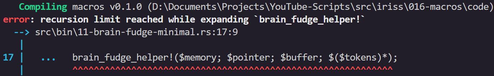
🦀👨🏻 Rust keeps track of how many times we recurse, that is, call a function or macro from the same function or macro.
🦀👨🏻 By default, the maximum amount of times we can do this is 128.
🦀👨🏻 Our macro, when parsing our silly Hello World example, recurses 1120 times!
🦀👨🏻 So, we could avoid recursing by looping through the tokens instead, and that will work for this current instruction set… but it won’t work for loops.
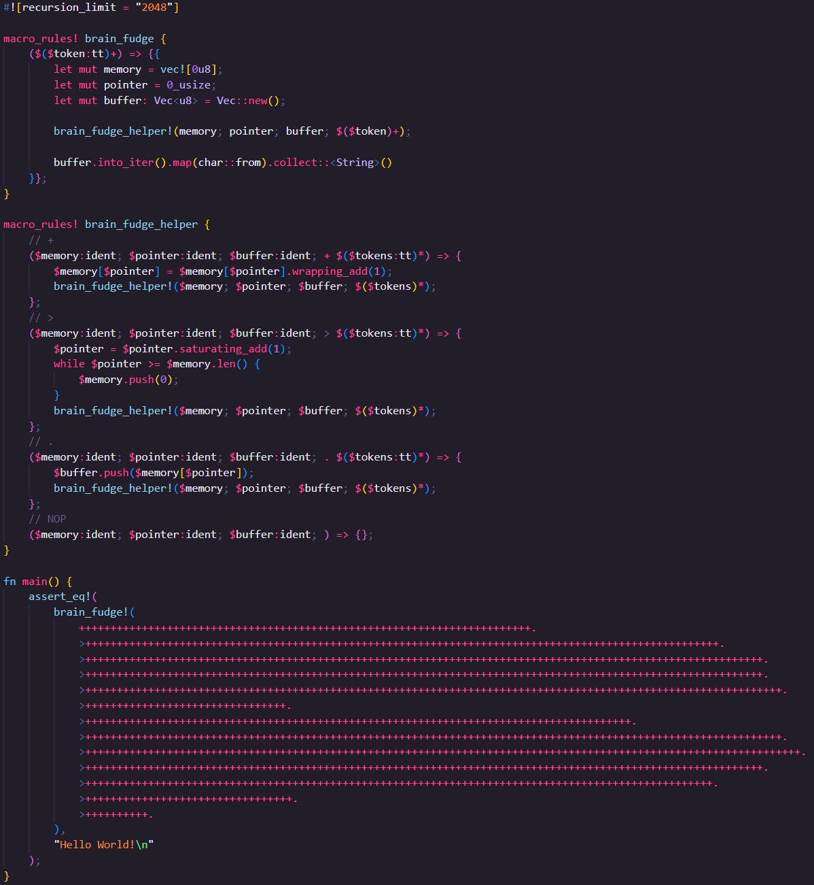
🦀👨🏻 We probably could come up with a way of mixing loops and recursion but to keep things simple, we’re going to play a dangerous game and manually tell Rust it’s fine for it to recurse 2048 times.
🦀👨🏻 The recursion_limit attribute applies at the crate level so be careful with this one!
🦀👨🏻 And now our code runs!
We’ve made a great start, we’ve got almost half the language done already, and I think, hope(?), you’ll agree this wasn’t all that painful.
🦀👨🏻 Lets implement some of the other operations.
🦀👨🏻 Dealing with less than and minus is easy enough, they’re the opposite of what we already have.
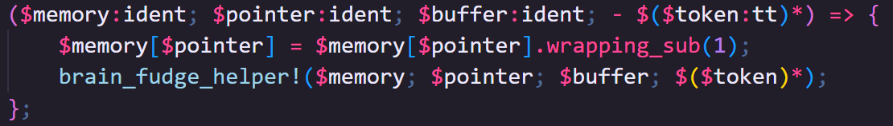
🦀👨🏻 Minus similar to Add, does a wrapping subtract of the value at the pointer
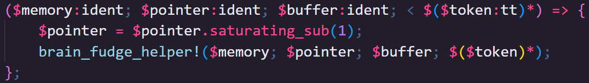
🦀👨🏻 Less than does a saturating subtract of our pointer.
🦀👨🏻 This is where that saturating behaviour matters; were we to wrap it, 0 - 1 becomes a number so large I can’t even say it.
🦀👨🏻 More complex is the loop.
🦀👨🏻 Luckily, we aren’t dealing with individual tokens, we’re dealing with token trees!
🦀👨🏻 In Rust, these bracket pairs specifically are all considered tokens that wrap other tokens.
🦀👨🏻 They’re treated as a single token tree that contain more token trees.
🦀👨🏻 So Rust will correctly handle them in pairs, even when nested.
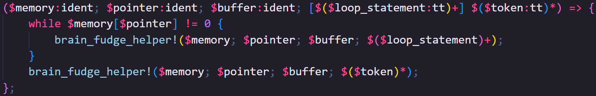
🦀👨🏻 This means to make our loop rule work, we can match against any token tree that starts with an open square bracket, contains more tokens which may include more square bracket pairs, and matches its ending close square bracket.
🦀👨🏻 This is followed by yet more tokens!
🦀👨🏻 How cool is it that we got this for free!?
🦀👨🏻 The loop is really easy to implement too!
🦀👨🏻 We check the value at the current pointer position, if it’s not zero we run the code in the loop and check again.
🦀👨🏻 If it is zero then we continue recursing with the rest of the code just like every other rule.
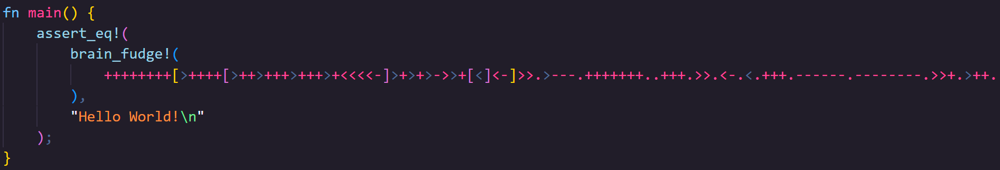
🦀👨🏻 To make sure our new code works we’ll update our test with the “real” Hello World.
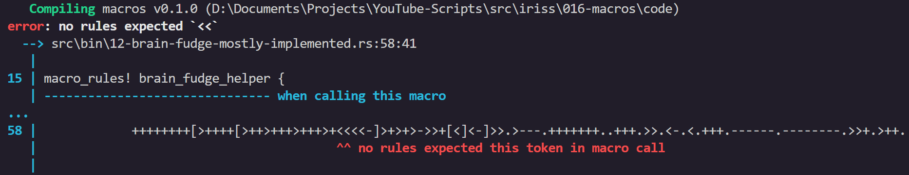
🦀👨🏻 And when we build… it doesn’t work again
🦀👨🏻 It actually gives us a number of errors, all different, all valid, but I’m only showing the first because it tells us what we need to know
🦀👨🏻 Why is it pointing at two greater than signs?
🦀👨🏻 We have a match on greater than already, right?
Well here’s the problem with using tokens for our DSL.
Rust considers two greater than symbols to be a single token.
Specifically it’s a “right shift” operator.
Tokens in Rust can be multiple characters.
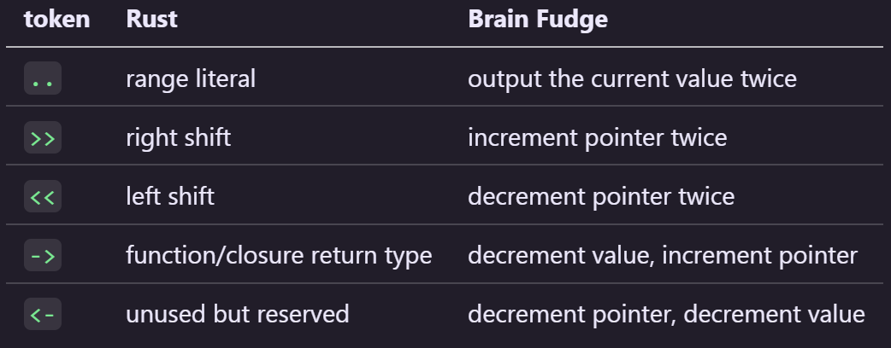
🦀👨🏻 Here are our problem tokens and what they mean in each language:
🦀👨🏻 “dot, dot” in Rust is a range literal, but in Brain Fudge it just means output the current value twice.
🦀👨🏻 “greater than, greater than” in Rust is a right shift operator, but in Brain Fudge it means increment the pointer twice
🦀👨🏻 “less than, less than” in Rust is a left shift operator, but in Brain Fudge it means decrement the pointer twice
🦀👨🏻 “dash, greater than” in Rust is used when writing function return types, in Brain Fudge it means decrement the value at the pointer then increment the pointer
🦀👨🏻 “less than, dash” in Rust isn’t used currently, but is reserved, in Brain Fudge it means decrement the pointer then decrement the value
Soooo… unfortunately we need to take care of these special cases.
Fortunately, while “greater than, greater than” is a right shift token, “greater than, space, greater than” is two greater than tokens.
Tokens can be seperated by whitespace which is ignored by the token tree fragment-specifier
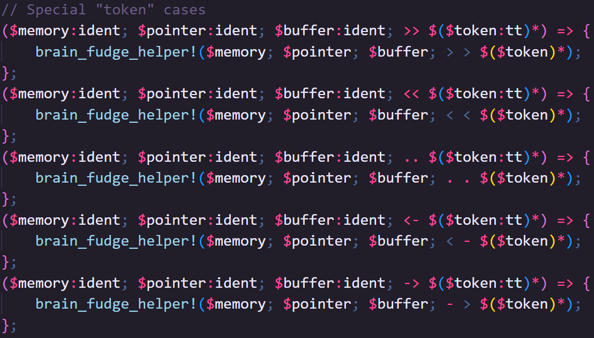
All we need to do is split the token and pass it back into the macro
Now when we run our code it works!
And we just created a transpiler for another language inside Rust!
That’s kind of wild, right?!
Challenge
I stopped setting homework, but I thought I’d set a little challenge for anyone who wants to do it.
We only implemented seven of the eight Brain Fudge operations.
Can you edit our brain_fudge! macro to work with programs that take input via the comma token?
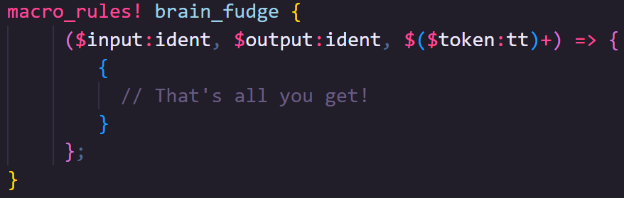
🦀👨🏻 To do this I recommend making the following change to the main brain_fudge! macro:
🦀👨🏻 This will allow callers to control inputs and outputs as they please.
🦀👨🏻 There is a test in the IRISS book that you can copy for a ROT13 program
🦀👨🏻 That’s a program that takes each alphabetical letter and shifts it 13 characters.
🦀👨🏻 There’s no prize for doing this except your own personal growth.
🦀👨🏻 If you get stuck or just want to see the answer, it’s over in the book, see the description.
Next Time
As ever thank-you so much to my Patreons, as well as the growing community at large, I’m not sure if we’d have made it so far without your support!
Next time, in the penultimate video in the IRISS series, we’re going to look at “unsafe” Rust, and specifically, how we keep ourselves… well… safe, while using it.
If you enjoyed this video, do me a solid and like and subscribe!
Don’t forget I stream on YouTube on Tuesday’s at 7pm UK time, if you’re interested in seeing me work on real Rust projects.
And whether there or here, I’ll see you next time.